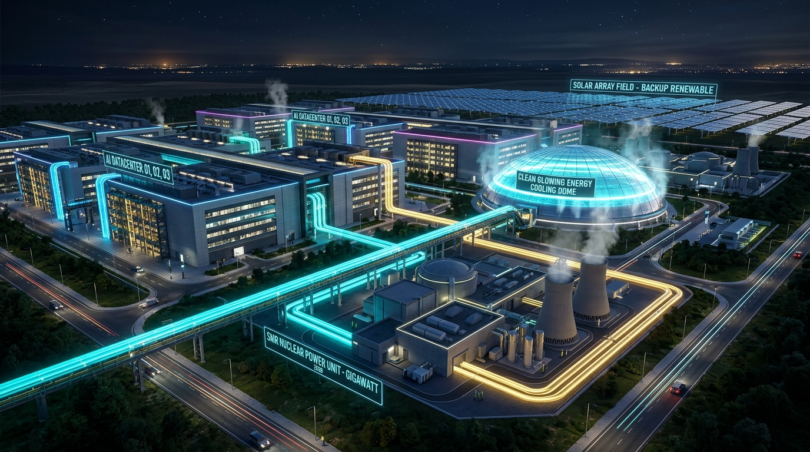
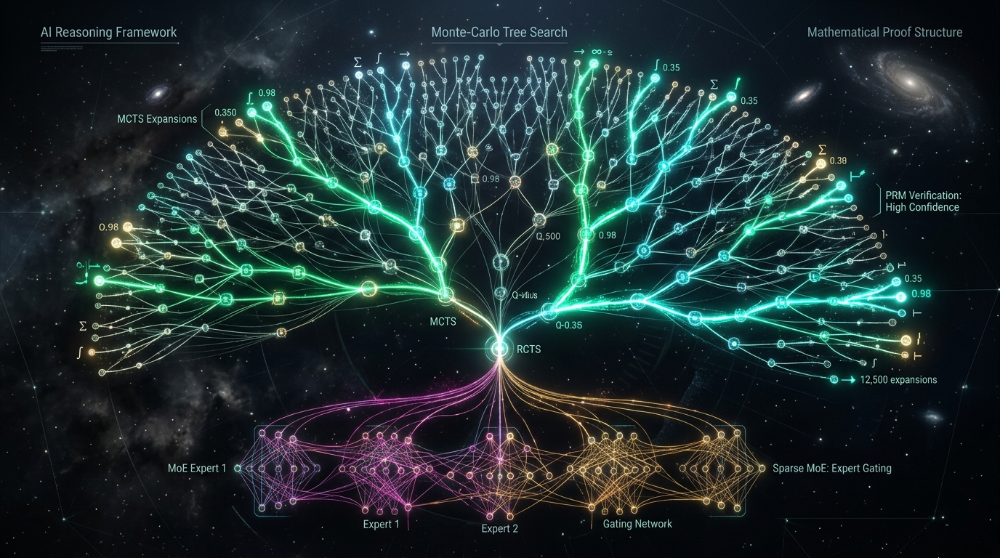

Global AI State & Macro Economics
In 2026, artificial intelligence shifted from prompt-driven tools to autonomous background agent fleets. Frontier training runs surpass 10²⁷ FLOPs, with cumulative infrastructure CapEx reaching $1.42 Trillion.
Global Datacenters & The Energy Frontier
Frontier model serving is bounded by grid capacity. Global AI datacenter power demand consumes 380+ TWh annually, driving direct co-location with nuclear plants, geothermal fields, and ultra-high-voltage DC lines.

The 2026 Frontier Paradigm: Test-Time Compute
Capability scaling transitioned from raw pre-training parameters to inference-time search—allocating compute dynamically via Process Reward Models (PRMs) to deliberate, verify, and self-correct.

Frontier Intelligence & Open vs Closed Pareto
Industry Transformation & Agent Autonomy
Enterprise deployments transitioned from conversational chatbots to autonomous agent swarms with direct P&L impact. R&D cycles in biotechnology, chip engineering, and materials discovery shrank from years to weeks.
AlphaFold 3 and co-folding diffusion architectures designed 48 active Phase-1 drug candidates currently in clinical trials.
Multi-agent developer swarms ingest codebases, write unit tests, verify regression suites, and auto-deploy canary fixes.
Reinforcement learning agents route 2nm chip interconnects and optimize macro placement beyond human layout team baselines.
Autonomous closed-loop robotic synthesis labs identified stable non-lithium solid electrolytes for next-gen energy storage.
Governance Treaties & The 2026–2030 Horizon
Global accords formalized hardware-level compute telemetry for training runs exceeding 10²⁶ FLOPs, as the scientific frontier advances toward unified multimodal embodiment and self-improving scientific agents.